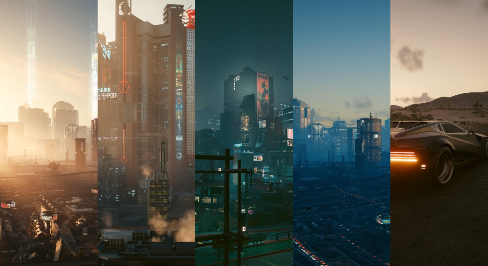
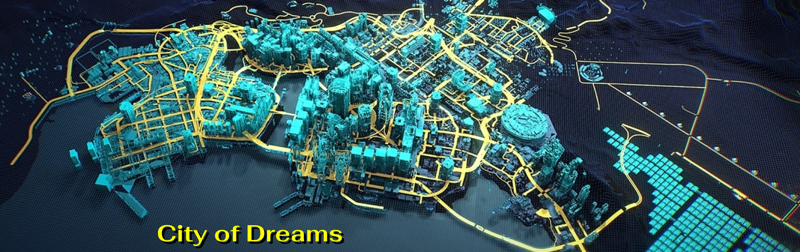

Map
Transport
History
Welcome to Night City

About
The Free City of Night City (NC) is located on the border between North and South California, on the Pacific coast of North America. It is considered as the first modern multicultural metropolis in the world.
